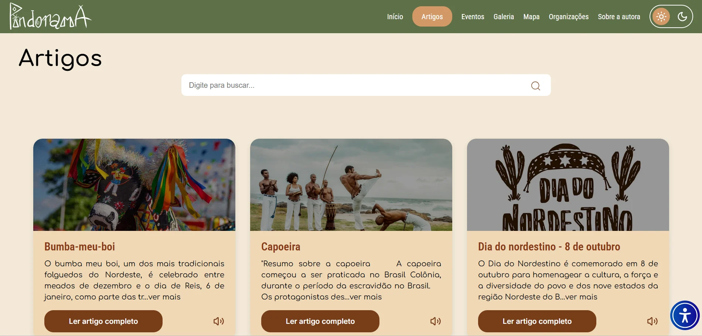
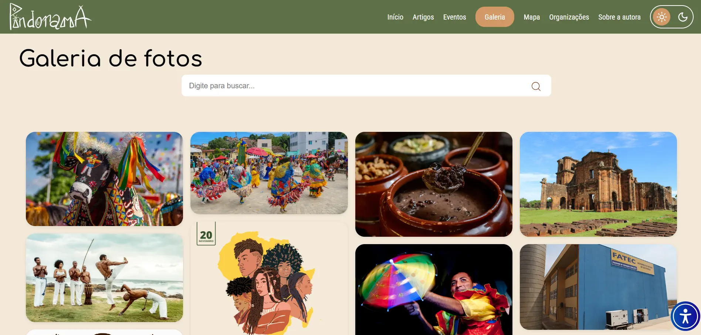
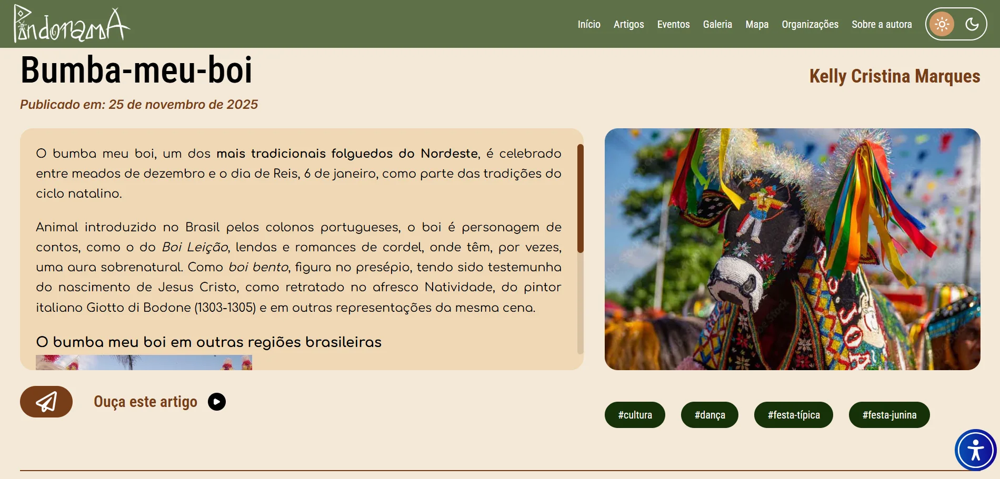
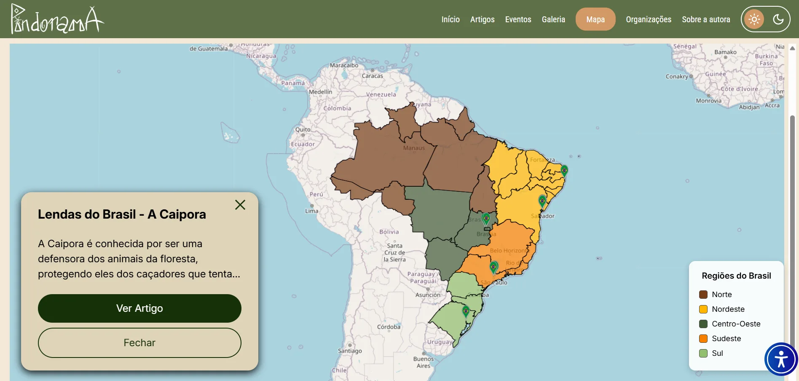
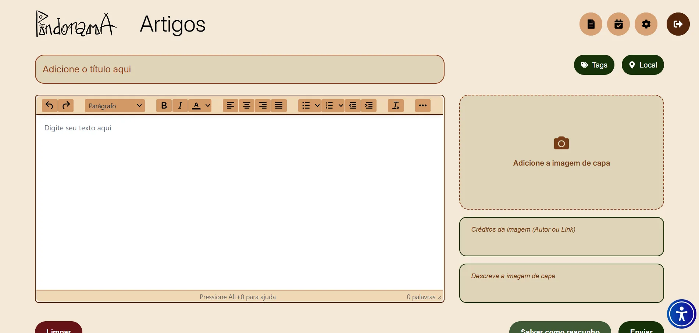

Aplicação web · Cultura brasileira
Pindorama
Artigos, eventos e imagens para conhecer o patrimônio cultural imaterial brasileiro.

O projeto
O Pindorama apresenta manifestações do patrimônio cultural imaterial brasileiro por meio de artigos, eventos e recursos visuais. A proposta aproxima o público dessas referências culturais e destaca sua preservação.
Proposta e estrutura
Frontend e backend foram organizados em repositórios separados. A interface React consome uma API em Ruby on Rails com PostgreSQL. A API inclui recursos para artigos, eventos, imagens e contato, com Cloudinary para o fluxo de imagens.
API, integrações & Scrum
Minha participação
- Integrei a equipe de backend com Isabella e Amanda, trabalhando na API em Ruby on Rails.
- Refatorei métodos e fluxos de artigos e participei da implementação e dos ajustes de upload e armazenamento de informações de imagens com Cloudinary.
- Implementei o fluxo de contato por e-mail.
- Adicionei e organizei models, migrations e controllers, incluindo estruturas relacionadas a autores.
- Fiz ajustes pontuais na interface para conectar recursos à API.
Scrum e colaboração
Atuei como Scrum Master na organização do trabalho: estruturação do backlog, planejamento de sprints conforme os prazos da faculdade, divisão de tarefas e acompanhamento das entregas. Facilitei reuniões, alinhamentos e resolução de conflitos, além de apoiar a definição de requisitos e a documentação.
O que essa experiência acrescentou
Trabalhei com uma API separada do frontend e com integrações externas, reforçando a organização entre persistência, serviços e interface.
Tecnologias
Na minha atuação
No projeto completo
O projeto em telas
Registros da aplicação desenvolvida pela equipe. As imagens mostram o produto completo; minha contribuição está descrita na seção acima.










Explore o projeto
Repositórios da organização TheLovelace com os arquivos e a documentação do projeto.